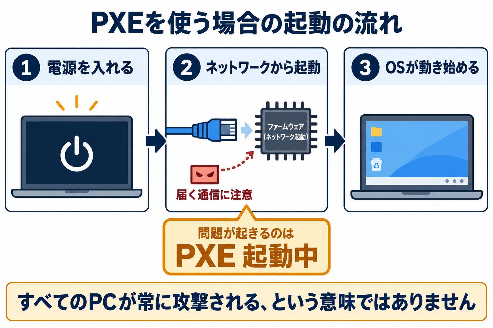

CVE-2026-97631
OSが起動する前の、ネットワーク処理の弱点
対象はUEFIファームウェアの実装「EDK II」にあるPXEネットワーク起動の処理です。重要なのは、深刻度だけでなくどの機器が、どの起動方法で、どこから通信を受けるかです。
- 脆弱な処理を使ってPXE起動している間、細工された通信が届くと、起動停止やOS起動前のコード実行につながります。
- 上流の修正PRはマージ済みです。ただし、手元の製品に修正ファームウェアが配布・適用されたこととは別です。
- すべてのPCが常に攻撃可能という意味ではありません。製品・版数・PXE設定・通信到達性を確認します。
何が起きるか
PXEは機器内のディスクではなくネットワークを利用して起動する仕組みです。この問題では、IPv4・IPv6のICMPエラーを受け取る処理が、用意された領域を越えてデータを書き込みます。場所は NetworkPkg/UefiPxeBcDxe です。
公式告知は、PXE起動中のクライアントに通信が到達することを条件としています。認証は不要ですが、コード実行には対象ファームウェアのビルドに関する知識が必要とされています。影響はDXEと呼ばれるOS起動前の段階に及びます。TianoCore公式告知

対象範囲と深刻度の読み方
CNAレコードはTianoCore EDK2の NetworkPkg、edk2-stable202608 以下を影響ありとしています。告知側は2026年9月14日時点のmasterを挙げています。これは上流コードの範囲であり、OEM製品の型番別一覧ではありません。CNAの公開レコード
| 主体 | 評価 | 主な条件 |
|---|---|---|
| TianoCore CNA | CVSS 4.0：9.5 Critical | ネットワーク経由、攻撃要件あり（AT:P）、権限・利用者操作不要 |
| SUSE | CVSS 3.1：8.8／important | 隣接ネットワーク（AV:A） |
| Amazon Linux | CVSS 3.1：8.3／Important | 隣接ネットワーク（AV:A）、複雑性高（AC:H） |
評価方式や前提が異なるため、点数だけを足し合わせたり、同じ条件の採点とみなしたりしません。CNAのベクトルは CVSS:4.0/AV:N/AC:L/AT:P/PR:N/UI:N/VC:H/VI:H/VA:H/SC:H/SI:H/SA:H です。SUSE／Amazon Linux
ディストリビューションの判定は、対象パッケージに限る
- SUSE：複数製品の
ovmfをAffected、全体をPendingと表示。例としてSLES 15 SP7、16.0、openSUSE Leap 16.0が掲載されています。 - Amazon Linux：AL2の
edk2はPending Fix、AL2023とAL2027 PreviewはNot Affectedと表示されています。
これは各社のパッケージ判定です。例えば「AL2023だから物理サーバーのBIOSも安全」とは読み替えられません。機器のファームウェアと仮想マシン用のOVMFは、別々に管理・確認します。
上流の修正と製品への配布
公式PR #13302 は2026年10月15日にmasterへマージされています。IPv4・IPv6のコピー境界と位置計算を修正し、領域を超える部分を切り詰める変更とテストが含まれています。
導入時は機器ベンダーやディストリビューションの正式な更新情報で、対象製品・版数・修正内容を確認してください。上流ソースを手元のBIOSへそのまま適用できるという案内ではありません。
公開日と更新日
- 2026年10月15日：上流修正PR #13302がマージ。
- 2026年10月22日 16:32:27 UTC：CVEレコード公開。
- 2026年10月22日 16:37:13 UTC：CVEレコード最終更新欄。
- 2026年10月23日：Amazon Linuxページの更新日欄。
- 2026年10月28日：この記事の資料確認日。脆弱性の発生日ではありません。
確認と対処の順序
以下は公開された攻撃条件から組み立てた、管理者向けの確認案です。利用環境に適用済みという報告ではありません。
- 対象を洗い出す。機器のメーカー・型番・BIOS/UEFI版数、仮想基盤のOVMF/edk2パッケージと使用中のファームウェアイメージを記録します。
- PXEを使う経路を確認する。通常の起動順だけでなく、ディスク起動失敗時のフォールバック、遠隔起動、一時起動設定、復旧・プロビジョニング手順も確認します。IPv4とIPv6を別々に見ます。
- ベンダーの回答と照合する。「この型番・この版数はCVE-2026-97631に該当するか」「修正版は何か」「更新後にどの再起動・停止が必要か」を確認します。上流版番号の文字列比較だけで判定しません。
- 更新まで露出を減らす。PXEが不要なら無効化を検討します。必要なら起動用ネットワークを分離し、信頼しない送信元からの到達を制限する案を検証します。ICMPを一律遮断すると必要な通信へ影響し得るため、変更管理と動作確認を行います。
- 更新後を確認する。配布物の真正性、適用後の版数、実際に使われるファームウェアイメージ、通常起動と必要なPXE起動を確認します。パッケージを取得しただけで完了にしません。
侵入を試すパケット送信やPoCの実行は、判定の前提ではありません。まず資産情報、設定、ベンダーの適用条件を照合してください。
確認できたことと未確認事項
| 項目 | この調査の結論 |
|---|---|
| 技術的な影響 | 公式告知が起動停止・コード実行を説明しています。 |
| 公開修正と回帰テスト | 公式PRで確認済み。公開テストの存在は攻撃用PoCの存在と同義ではありません。 |
| 公開攻撃PoC | 確認した一次資料からは検証可能な攻撃用PoCを特定できていません。「存在しない」と断定しません。 |
| 実環境での悪用 | 確認した一次資料に実悪用を裏付ける記載を見つけていません。被害がない証明ではありません。 |
| CISA KEV | 今回、公式カタログの直接取得が403となり、現時点の掲載有無を確認できていません。 |
| 手元の機器への該当性 | 機器・設定・版数を調べていないため未判定です。 |
| 全OEMの修正版一覧 | 確認できていません。個別のベンダー確認が必要です。 |
一次資料
- TianoCore：GHSA-99cj-7hg9-mp4m：攻撃条件、影響、評価。
- CVE Program：CNAレコード（JSON）：影響範囲、公開・更新時刻、CVSS。
- TianoCore：修正PR #13302：マージ状態、修正内容、テスト。
- SUSE：CVE-2026-97631：製品別ovmf判定と採点。
- Amazon Linux：CVE-2026-97631：edk2パッケージ判定と更新日。